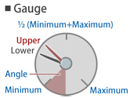
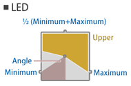
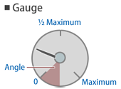
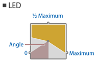

| ⓘ The panel.cfg is outdated |
| The panel.cfg has been superseded by the panel2.cfg. You can achieve the full functionality of the panel.cfg and more by using the panel2.cfg instead. If both files are present in the train folder, the panel2.cfg has precedence over the panel.cfg. |
| ⓘ Overlay and Lighting |
| The cab is rendered as an overlay. This means that the cab will always appear in front of scenery objects. This is intentional, because this way, rain, walls and other obstructing objects cannot be accidentally rendered inside the cab. Furthermore, lighting in the cab is different than in the scenery. While the ambient brightness is reflected in the cab, the ambient color is not, and the cab always appears as if reflecting white light. |
| [NameOfTheSection] |
| NameOfTheKey = Value |
| The Panel section defines which background image to use. Only one Panel section is expected in a panel.cfg file. |
| [Panel] |
| Background = FileName |
| FileName: The image file to use as the panel background image. |
| The View section defines the viewing angle conditions. Only one View section is expected in a panel.cfg file. |
| [View] |
| Yaw = ValueInDegrees |
| ValueInDegrees: A floating-point number measured in degrees indicating the yaw. Positive values represent right, negative ones left. The default value is 0. |
| Pitch = ValueInDegrees |
| ValueInDegrees: A floating-point number measured in degrees indicating the pitch. Positive values represent up, negative ones down. The default value is 0. |
| This section creates a pressure indicator. You can use as many of these sections as required. |
| [PressureIndicator] |
| ☀ | The following spelling variations can be used: |
| PressureIndicator, PressureGauge, PressureMeter, 圧力計 |
| Type = Value |
| Value: The type of pressure indicator to use. The default value is 0. |
| ▸ Options for Value: |
|
0: The pressure indicator is a gauge. 1: The pressure indicator is an LED.   |
| ☀ | The following spelling variations can be used: |
| Type, 形態 |
| LowerNeedle = Subject, RedValue, GreenValue, BlueValue |
|
Subject: The kind of pressure to indicate. RedValue: The red component of the color. Measured from 0 (black) to 255 (red). The default value is 0. GreenValue: The green component of the color. Measured from 0 (black) to 255 (green). The default value is 0. BlueValue: The blue component of the color. Measured from 0 (black) to 255 (blue). The default value is 0. |
| ▸ Options for Subject: |
|
0: Does not show the lower needle. 1 or BC or ブレーキシリンダ: Indicates the pressure of the brake cylinder. 2 or BP or ブレーキ管 or 制動管: Indicates the pressure of the brake pipe. 3 or ER or 釣り合い空気溜め or 釣り合い空気ダメ or つりあい空気溜め or ツリアイ空気ダメ: Indicates the pressure of the equalizing reservoir. 4 or MR or 元空気溜め or 元空気ダメ: Indicates the pressure of the main reservoir. 5 or SAP or 直通管: Indicates the pressure of the straight air pipe. |
| ☀ | The following spelling variations can be used: |
| LowerNeedle, LowerHand, 下針 |
| UpperNeedle = Subject, RedValue, GreenValue, BlueValue |
|
Subject: The kind of pressure to indicate. RedValue: The red component of the color. Measured from 0 (black) to 255 (red). The default value is 0. GreenValue: The green component of the color. Measured from 0 (black) to 255 (green). The default value is 0. BlueValue: The blue component of the color. Measured from 0 (black) to 255 (blue). The default value is 0. |
| ▸ Options for Subject: |
|
0: Does not show the upper needle. 1 or BC or ブレーキシリンダ: Indicates the pressure of the brake cylinder. 2 or BP or ブレーキ管 or 制動管: Indicates the pressure of the brake pipe. 3 or ER or 釣り合い空気溜め or 釣り合い空気ダメ or つりあい空気溜め or ツリアイ空気ダメ: Indicates the pressure of the equalizing reservoir. 4 or MR or 元空気溜め or 元空気ダメ: Indicates the pressure of the main reservoir. 5 or SAP or 直通管: Indicates the pressure of the straight air pipe. |
| ☀ | The following spelling variations can be used: |
| UpperNeedle, UpperHand, 上針 |
| Center = X, Y |
|
X: The X-coordinate in the panel image at which the center of the pressure indicator is placed in pixels. The default value is 0. Y: The Y-coordinate in the panel image at which the center of the pressure indicator is placed in pixels. The default value is 0. |
| ☀ | The following spelling variations can be used: |
| Center, 中心 |
| Radius = ValueInPixels |
| ValueInPixels: The radius of the pressure indicator in pixels. The default value is 16. |
| ☀ | The following spelling variations can be used: |
| Radius, 半径 |
| Background = FileName |
| FileName: The background image to use, relative to the train folder. |
| ☀ | The following spelling variations can be used: |
| Background, 背景 |
| Cover = FileName |
| FileName: The cover image to use, relative to the train folder. |
| ☀ | The following spelling variations can be used: |
| Cover, ふた |
| Unit = Value |
| Value: The type of unit to use for the Minimum and Maximum settings. The default value is 0. |
| ▸ Options for Value: |
|
0 or kpa: The unit is kilo-pascal (1000 Pa). 1 or kgf/cm2 or kgf/cm^2 or kg/cm2 or kg/cm^2: The unit is kilogram-force per centimeter squared (98066.5 Pa). |
| ☀ | The following spelling variations can be used: |
| Unit, 単位 |
| Minimum = PressureValue |
| PressureValue: The minimum pressure corresponding to Angle. The unit is defined via Unit. |
| ☀ | The following spelling variations can be used: |
| Minimum, 最小 |
| Maximum = PressureValue |
| PressureValue: The maximum pressure corresponding to Angle. The unit is defined via Unit. |
| ☀ | The following spelling variations can be used: |
| Maximum, 最大 |
| Angle = ValueInDegrees |
| ValueInDegrees: The angle corresponding to the Minimum and Maximum pressures in degrees. |
| ☀ | The following spelling variations can be used: |
| Angle, 角度 |
| This section creates an analog speed indicator. You can use as many of these sections as required. |
| [SpeedIndicator] |
| ☀ | The following spelling variations can be used: |
| SpeedIndicator, Speedometer, 速度計 |
| Type = Value |
| Value: The type of pressure indicator to use. The default value is 0. |
| ▸ Options for Value: |
|
0: The pressure indicator is a gauge. 1: The pressure indicator is an LED.   |
| ☀ | The following spelling variations can be used: |
| Type, 形態 |
| Needle = RedValue, GreenValue, BlueValue |
|
RedValue: The red component of the color. Measured from 0 (black) to 255 (red). The default value is 255. GreenValue: The green component of the color. Measured from 0 (black) to 255 (green). The default value is 255. BlueValue: The blue component of the color. Measured from 0 (black) to 255 (blue). The default value is 255. |
| ☀ | The following spelling variations can be used: |
| Needle, Hand, 針 |
| Center = X, Y |
|
X: The X-coordinate in the panel image at which the center of the speed indicator is placed in pixels. The default value is 0. Y: The Y-coordinate in the panel image at which the center of the speed indicator is placed in pixels. The default value is 0. |
| ☀ | The following spelling variations can be used: |
| Center, 中心 |
| Radius = ValueInPixels |
| ValueInPixels: The radius of the pressure indicator in pixels. The default value is 16. |
| ☀ | The following spelling variations can be used: |
| Radius, 半径 |
| Background = FileName |
| FileName: The background image to use, relative to the train folder. |
| ☀ | The following spelling variations can be used: |
| Background, 背景 |
| Cover = FileName |
| FileName: The cover image to use, relative to the train folder. |
| ☀ | The following spelling variations can be used: |
| Cover, ふた |
| Maximum = SpeedValue |
| SpeedValue: The maximum speed corresponding to Angle. The unit is kilometers per hour (km/h). |
| ☀ | The following spelling variations can be used: |
| Maximum, 最大 |
| Angle = SpeedValue |
| SpeedValue: The angle corresponding to the Maximum speed in degrees. |
| ☀ | The following spelling variations can be used: |
| Angle, 角度 |
| Atc = FileName |
| FileName: The image file to extract ATC indicator lamps from, relative to the train folder. |

| ● | 1st: ATC not currently available |
| ● | 2nd: 0 km/h speed restriction |
| ● | 3rd: 15 km/h speed restriction |
| ● | 4th: 25 km/h speed restriction |
| ● | 5th: 45 km/h speed restriction |
| ● | 6th: 55 km/h speed restriction |
| ● | 7th: 65 km/h speed restriction |
| ● | 8th: 75 km/h speed restriction |
| ● | 9th: 90 km/h speed restriction |
| ● | 10th: 100 km/h speed restriction |
| ● | 11th: 110 km/h speed restriction |
| ● | 12th: 120 km/h speed restriction |
| ● | 13th: ATS currently active |
| AtcRadius = ValueInPixels |
| ValueInPixels: The radius in pixels at which ATC indicators are placed around the speed indicator. The default value is 0. |
| ☀ | The following spelling variations can be used: |
| AtcRadius, Atc半径 |
| This section creates a digital speed indicator. You can use as many of these sections as required. |
| [DigitalIndicator] |
| Number = FileName |
| FileName: The image file to extract digits from, relative to the train folder. Is required to be specified. |
| Corner = Left, Top |
|
Left: The X-coordinate in the panel image at which the left of the speed indicator is placed in pixels. The default value is 0. Top: The Y-coordinate in the panel image at which the top of the speed indicator is placed in pixels. The default value is 0. |
| Size = Width, Height |
|
Width: The width of a single digit inside the bitmap in pixels. Height: The height of a single digit inside the bitmap in pixels. |
| Unit = Value |
| Value: The type of unit to use for the display. The default value is 0. |
| ▸ Options for Value: |
|
0 or km/h: The unit is kilometers per hour. 1 or mph: The unit is international miles per hour. 2 or m/s: The unit is meters per second. |
| This section creates a door indicator. You can use as many of these sections as required. |
| [PilotLamp] |
| ☀ | The following spelling variations can be used: |
| PilotLamp, 知らせ灯 |
| TurnOn = FileName |
| FileName: The image file shown when the doors are fully closed. |
| ☀ | The following spelling variations can be used: |
| TurnOn, 点灯 |
| TurnOff = FileName |
| FileName: The image file shown when the doors are not fully closed. |
| ☀ | The following spelling variations can be used: |
| TurnOff, 消灯 |
| Corner = Left, Top |
|
Left: The X-coordinate in the panel image in pixels at which the left of the pilot lamp is placed. The default value is 0. Top: The Y-coordinate in the panel image in pixels at which the top of the pilot lamp is placed. The default value is 0. |
| ☀ | The following spelling variations can be used: |
| Corner, 左上 |
| This section creates a watch consisting of needles for hour, minute and second. You can use as many of these sections as required. |
| [Watch] |
| ☀ | The following spelling variations can be used: |
| Watch, 時計 |
| Background = FileName |
| FileName: The background image to use, relative to the train folder. |
| ☀ | The following spelling variations can be used: |
| Background, 背景 |
| Center = X, Y |
|
X: The X-coordinate in the panel image at which the center of the watch is placed in pixels. The default value is 0. Y: The Y-coordinate in the panel image at which the center of the watch is placed in pixels. The default value is 0. |
| ☀ | The following spelling variations can be used: |
| Center, 中心 |
| Radius = ValueInPixels |
| ValueInPixels: The radius of the watch needles in pixels. The default value is 16. |
| ☀ | The following spelling variations can be used: |
| Radius, 半径 |
| Needle = RedValue, GreenValue, BlueValue |
|
RedValue: The red component of the color. Measured from 0 (black) to 255 (red). The default value is 255. GreenValue: The green component of the color. Measured from 0 (black) to 255 (green). The default value is 255. BlueValue: The blue component of the color. Measured from 0 (black) to 255 (blue). The default value is 255. |
| ☀ | The following spelling variations can be used: |
| Needle, Hand, 針 |
| This section creates an indicator depicting the state of the power and brake handles. You can use as many of these sections as required. |
| [BrakeIndicator] |
| Image = FileName |
| FileName: The image to use, relative to the train folder. Is required to be specified. |
| ● | Power notch n |
| ● | Power notch n-1 |
| ● | ... |
| ● | Power notch 2 |
| ● | Power notch 1 |
| ● | Release (REL) |
| ● | Lap (LAP) |
| ● | Service (SRV) |
| ● | Emergency brake (EMG) |
| ● | Power notch n |
| ● | Power notch n-1 |
| ● | ... |
| ● | Power notch 2 |
| ● | Power notch 1 |
| ● | Neutral |
| ● | Brake notch 1 |
| ● | Brake notch 2 |
| ● | ... |
| ● | Brake notch m-1 |
| ● | Brake notch m |
| ● | Emergency brake |
| ● | Power notch n |
| ● | Power notch n-1 |
| ● | ... |
| ● | Power notch 2 |
| ● | Power notch 1 |
| ● | Neutral |
| ● | Hold brake |
| ● | Brake notch 1 |
| ● | Brake notch 2 |
| ● | ... |
| ● | Brake notch m-1 |
| ● | Brake notch m |
| ● | Emergency brake |
| Corner = Left, Top |
|
Left: The X-coordinate in the panel image at which the left of the indicator is placed in pixels. The default value is 0. Top: The Y-coordinate in the panel image at which the top of the indicator is placed in pixels. The default value is 0. |
| Width = ValueInPixels |
| Value: The width of a single element inside the bitmap in pixels. Is required to be specified. |